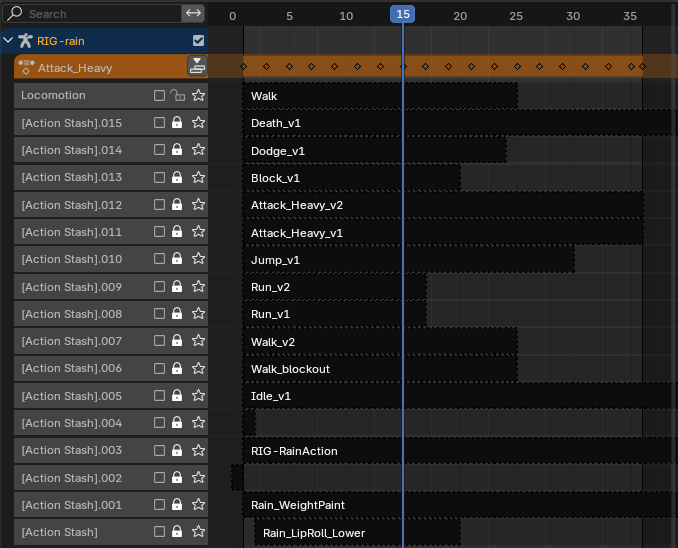
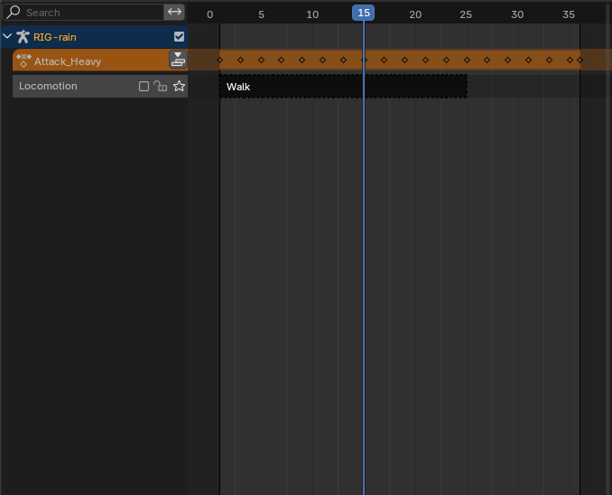
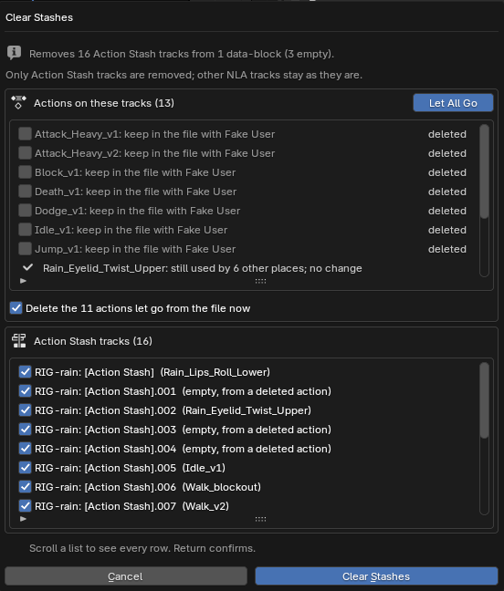

Actionyard for Blender
Actionyard clears the [Action Stash] tracks that Blender's Purge won't remove, and shows every object, track and bone that uses each action in your file.



$12, one-time, every future version included, source included (GPL-3.0-or-later). For Blender 4.4 and later; tested on Blender 4.4, 4.5 LTS and 5.2 LTS on Linux. Windows and macOS: not tested yet.
Polar checkout · 14-day refund · no license check · details
Which bones use this action?

- Yours if one file holds many actions: a game move set, or takes you made with New Action, which stashes your old take every time. Or you inherited a face rig and need to know which bones use an action before you delete it.
- Linked rig? It clears only the stashes you made in your shot. The library's tracks stay locked, and your library file is not written.
- Skip it if you have a few actions on one rig: Blender's Outliner and Purge already cover you. No onion skins or channel locking either.

Watch it work
![Blender's File > Clean Up > Purge Unused Data dialog over Rain's viewport: Local Data-blocks: 1 Text; Linked Data-blocks: None; Recursive Delete; Cancel and Delete. Beside it, her NLA editor with the column of 16 [Action Stash] tracks](img/rain-purge-dialog.png)
What it does
Blender already lists every action with its user count (Outliner, Blender File mode), toggles Fake User, purges actions with no users (Outliner, Unused Data, Purge), deletes a stash track by hand in the NLA editor, and remaps users (Action menu). A buyer with a few actions on one rig needs none of this. With many actions and stashes, the buyer pays for one list that names, per action, every object, NLA track, Action Stash and Action constraint that uses it, and for removing chosen stashes in one previewed, undoable step, which Purge does not do because a stashed action is still in use. Version one does not show onion skins and does not lock channels.
Actionyard is a sidebar tab in the NLA editor and the Dope Sheet.
- One list of every action. Each action in the file with its frame range, how many places use it, Blender's user count and a Fake User toggle. Search by name, filter to Stashed, No users, Fake User only or Used, and sort by name or by number of uses. A line above the list counts the actions, the stashed ones and the ones with no users.
- Used by: every place, with the slot. Click an action to see each place that uses it: the active action of an object, shape keys or material; an NLA track, with the track and strip names; an Action Stash; or an Action constraint, with the armature, bone and constraint names, and "(muted)" on a muted one. Shape keys and materials are named by their object, as in "Kit_Head (shape keys)". Click a row, and that object is selected and made active.
- Clear Stashes, previewed. For the active object or the whole file. Before anything changes, the preview says how many stash tracks go, from how many objects and how many are empty, and which actions are on them. For each action left unused you choose: keep it in the file with Fake User, or let it go. Keep is the default every time the preview opens, also after Ctrl+Z; Let All Go unticks them all at once. A take you already gave a Fake User is marked as already kept. A stash track you have unmuted, so it plays, is marked and starts unticked. Only Action Stash tracks are removed; your other NLA tracks stay, muted or not. One Ctrl+Z undoes it all.
- Old takes gone for good, before an export. Two clicks in the same preview, Let All Go and Delete the actions let go from the file now, then confirm: the stash tracks and the takes are gone in one step, and one Ctrl+Z brings them back. Takes with a Fake User you set stay.
- Empty stash tracks too. The [Action Stash] tracks Blender leaves behind when a stashed action is deleted the plain way are listed as "empty, from a deleted action" and cleared with the rest.
- Delete Action Everywhere. Tick the actions you want gone. The preview lists every place that will lose each one, in one list that scrolls, so the buttons stay on screen however many you pick. Then they are removed from all of those places and from the file in one undo step, with no empty stash tracks left behind. If nothing you picked can be deleted, it says why and offers no Delete button.
- Remove Unused Actions. Deletes actions with no users, keeps Fake User actions unless you tick them, and always keeps pose-library assets. Its preview lists every action it will delete.
- Works with linked and overridden rigs. Linked data, and everything a library override takes from its library file, is listed with a lock and never changed. Stash tracks you added on the override in your own file are yours to clear, as they are in Blender's NLA editor.
- A written record. Every operation says what it changed in the status bar and appends the details to a text block called "Actionyard Report".
In Blender, for real
Captured on Rain's file in Blender 4.5.15 LTS with Actionyard 1.4.0. The panel and dialog captures are shown at real size on a wide screen; tap an image for the full capture.

![The Clear Stashes dialog at real size: 'Removes 16 Action Stash tracks from 1 data-block (3 empty). Only Action Stash tracks are removed; other NLA tracks stay as they are.' Actions on these tracks (13), scrolled: Dodge_v1, Idle_v1 and Jump_v1 kept; Rain_Eyelid_Twist_Upper still used by 6 other places and Rain_Lips_Roll_Lower by 15, no change; Run_v1 and Run_v2 kept; Walk_blockout unticked, becomes unused; the Let All Go button on the list's header and, under the list, the unticked 'Delete the 1 action let go from the file now'. Action Stash tracks (16): each with its tick, three of them 'empty, from a deleted action'. Then 'Scroll a list to see every row. Return confirms.' and the Cancel and Clear Stashes buttons](img/clear-stashes-preview.png)



![The Delete Action Everywhere dialog at real size: 'Deletes 13 actions, removed from 34 places first.' One list: Attack_Heavy_v1, used in 1 place, removed from each, then deleted, with its line 'RIG-rain: Action Stash: track [Action Stash].011, strip Attack_Heavy_v1, slot RIG-rain', and the same for Attack_Heavy_v2, Block_v1, Death_v1, Dodge_v1, Idle_v1 and Jump_v1. Under the list: 'Scroll the list to see all 47 lines.' and 'One undo step (Ctrl+Z) brings everything back. Return confirms.', then Cancel and Delete Everywhere](img/rain-delete-preview.png)

How these images were made
The character is Rain, Blender Studio's free production rig (CC BY 4.0, credit below), in her own file as downloaded from studio.blender.org, with its 19 face actions and their Action constraints. Her file already holds 5 [Action Stash] tracks, 3 of them empty. We added a game move set keyed on her controls: 17 final actions, each kept with Fake User, and 11 older takes, each stashed with Blender's own Stash operator, as New Action does. The result is 47 actions and 16 [Action Stash] tracks. For the override image, a new shot file links Rain from her downloaded file, makes her a library override and stashes four takes. Every image and GIF on this page is a capture of a real Blender 4.5.15 LTS window on Linux at 1920x960, with Actionyard 1.4.0 installed from its zip through Blender's extension installer. The mouse and keyboard input is scripted. The GIFs are cut from screen recordings of the same session, in real time. A check after every step compared the file's data with what the screen shows: 33 checks for the main captures and 11 for Used by on Rain_Lips_UpDown and the Delete preview, all passed. The demo video above was recorded earlier, with 1.2.0.
Character: Rain Rig (CC) Blender Foundation | studio.blender.org, used under CC BY 4.0. We added the game actions, the stashed takes and the shot file. Rain is not included with Actionyard.
Blender's way against Actionyard, on Rain's file
Rain's file starts with 47 actions and 16 [Action Stash] tracks; 3 of those tracks already hold no action. Measured in Blender 4.5.15, each row on a fresh copy of the file:
| What you do | Actions left | Stash tracks left | Stash tracks with no action |
|---|---|---|---|
| Blender's Purge | 47 | 16 | 3 |
| Delete the 11 stashed takes in the Outliner, then Purge | 36 | 16 | 14 |
| Actionyard's Clear Stashes (Whole File, defaults), then Purge | 47 (the 11 takes kept with Fake User) | 0 | 0 |
In the real window, the same Clear Stashes with one take let go removed all 16 tracks, kept the other 10 takes with Fake User and left the Locomotion track alone. One Ctrl+Z brought every track and every Fake User flag back.
Big files, measured on test files rather than a real character: in the real interface of Blender 4.5 LTS and 5.2 LTS, a Delete Action Everywhere preview with 153 actions picked on a 10-rig file listed all 314 of its lines with the buttons on screen. In our automated tests, a file with 12 rigs of 200 bones, 800 actions and 792 NLA tracks is scanned in under half a second on every tested Blender version.
Details
- Buying: secure checkout by Polar, which delivers the zip; the zip includes the full source. Actionyard has no license check and no network access. If it doesn't work as described on your file and we can't fix it, email us within 14 days of purchase for a full refund (terms). Questions first? support@ochrestack.com.
- $12 once. Every future version of Actionyard is included: no subscription, no renewal, no paid version 2.
- Requires Blender 4.4 or newer (slotted actions). Tested on Blender 4.4, 4.5 LTS and 5.2 LTS, on Linux; checked in the real Blender 4.5 LTS and 5.2 LTS interface. Python only, with no compiled parts, but Windows and macOS have not been tested yet.
- GPL-3.0-or-later. Full source code included with your purchase.
- Privacy: Actionyard makes no network calls and collects nothing: no telemetry, no analytics, no update checks. It changes only the open .blend file, and only when you run one of its operators.
- Support: support@ochrestack.com. A small .blend that shows the problem helps most.
Documentation
The manual (README.md) is inside the zip: open the zip to read it, but install the zip itself, as it is. A one-page guide is online: Actionyard quick start.
Install
- Download
actionyard-1.4.0.zip. Do not unzip it. - In Blender 4.4 or newer, open Edit > Preferences > Add-ons.
- Open the drop-down menu (⌄) at the top right, choose Install from Disk... and pick the zip. It is enabled straight away.
- In the NLA editor or the Dope Sheet, press N and open the Actionyard tab.
On the Add-ons page Blender asks nothing about internet access and shows no Repository Alert. The same Install from Disk is in Get Extensions too; there Blender may ask about internet access (Continue Offline is fine) and then show a red "Repository Alert" about its online catalogue, which you can ignore.
Words used on this page
- NLA: Blender's Nonlinear Animation editor, where an object's actions sit on tracks.
- Action Stash: a muted NLA track named "[Action Stash]" that keeps an action in the file. Blender's Stash operator makes one, and so does New Action for the previous take.
- Fake User: a flag that keeps a data-block, such as an action, in the file when nothing else uses it.
- Slot: since Blender 4.4, one action can hold animation for several data-blocks, one slot each. Each Used by row names the slot it uses.
Known limits
- No onion skins and no channel locking. No action switching, frame-range setting, export, NLA merging or baking.
- Linked data, and what a library override takes from its library, is read-only: an action that such data uses is not deleted, and an empty stash track from the library stays. Tracks you added on an override in your own file are not affected by this.
- Delete Action Everywhere leaves an action alone when one of its strips is on a locked NLA track; unlock the track first. Blender locks its own stash tracks, and those are still cleared.
- NLA tweak mode: an object in tweak mode keeps its stash tracks and actions until you exit tweak mode (Tab in the NLA editor). Both previews list it as "left alone" before you confirm.
- A strip inside a meta strip loses its action but stays in the meta strip; Blender's Python API cannot remove it.
- What counts as a stash is Blender's own rule: a track name containing "[Action Stash]". A track you named that way yourself counts too, so check the preview.
- The sidebar opens narrow: the list then shows Name, Uses and Fake User, and the clicked action's frames and users are at the top of Used by. Widen the sidebar for the Frames and Users columns. Very long names can still be cut.
- Opening the Actionyard Report in a Text Editor adds an undo step of its own; press Ctrl+Z once more to undo the clean-up, or use Edit > Undo History.
- Not tested yet: Windows, macOS, and overrides of overrides (nested library overrides). English only.